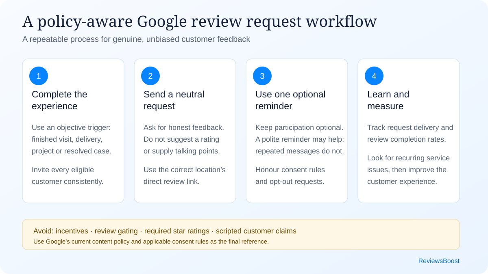

The best review programs are built into everyday operations, not launched once and forgotten. After a real interaction, eligible customers should receive the same clear invitation. That produces a steadier, more representative stream of feedback and saves staff from having to improvise every time.
{kind=link}

The seven-part review request system
1. Define who receives an invitation
Use an objective event that applies to all eligible customers: a completed appointment, delivered order, resolved support ticket, paid invoice or finished project. Do not ask staff to decide whether a customer “seems happy” before sending the review link. That selection process can become review gating and produces a distorted picture of customer experience.
Document exclusions that are operational rather than sentiment-based—for example, duplicate contacts, cancelled appointments, test orders, underage customers without appropriate consent, or people who did not actually transact with the location.
2. Choose the best moment
Ask while the experience is still fresh, but only after the value promised has actually been delivered. The right timing changes by business:
- Restaurants and salons: shortly after the visit, while details are fresh.
- Home services: after the work is complete and the customer has confirmed the result.
- Professional services: at a natural milestone, without implying a review affects future service.
- Ecommerce: after delivery plus enough time to use the product.
- Healthcare: use extra care with privacy; never reveal the relationship in a public response.
Start with one request and, if appropriate, one polite reminder a few days later. Beyond that, people can feel chased rather than invited, and opt-outs tend to rise.
3. Use the direct Google review link
Reduce friction by sending the location’s official review link rather than asking people to search for the business. Test it while signed out and on both iPhone and Android. Multi-location brands should map each customer to the correct location instead of using one company-wide link. Our review link and QR code guide explains setup, testing and placement.
4. Write a neutral request
Keep the invitation simple: explain why feedback matters, make it optional, and ask for an honest review. Do not hint at a star rating or hand people talking points. If it takes a long paragraph to say, it is probably too long.
Subject: How was your experience with [Business Name]?
Hi [First Name], thank you for choosing [Business Name]. If you have a moment, would you share an honest review of your experience? Your feedback helps our team improve and helps other customers make informed decisions.
Thank you,
[Team or staff name]
Thanks for visiting [Business Name], [First Name]. If you’d like to share feedback, you can leave an honest Google review here: [short link]. Thank you. Reply STOP to opt out.
“Thank you for coming in today. We invite all our customers to share honest feedback. If you’d like, the link is on your receipt.”
Replace placeholders, identify the sender, and follow applicable consent and electronic-message requirements. For commercial electronic messages in Canada, review the Government of Canada’s CASL guidance or obtain advice for your specific program.
5. Make the request accessible
Do not rely only on a QR code; some customers cannot or prefer not to scan one. Include a readable short link and offer an alternative feedback channel. Use adequate type size and contrast on printed materials. On email, make the linked text descriptive—“Leave an honest Google review”—instead of “click here.”
6. Prepare staff
Staff need the wording and the guardrails. In most businesses, a one-page procedure is enough:
- Ask after the defined completion event.
- Invite all eligible customers, not only visibly satisfied ones.
- Do not offer gifts, discounts, contest entries or service benefits.
- Do not request five stars or dictate words to include.
- Do not ask to see the customer’s phone or watch them post.
- Never create a review for a customer or use an employee account.
- Escalate complaints privately without blocking the public review path.
7. Measure the process, not just the star rating
Track invitations sent, link visits where possible, new reviews, response rate, location and request channel. Look at monthly trends instead of reacting to every daily movement. The comments themselves should feed back into operations; watching the displayed rating alone misses the useful part.
| Metric | What it tells you | Useful action |
|---|---|---|
| Invitations sent | Whether the process is consistently used | Check workflow adoption by location |
| Review conversion rate | How easy and well-timed the request is | Test one variable at a time |
| Review recency | Whether feedback is current | Maintain an always-on request flow |
| Repeated themes | Operational strengths and weaknesses | Assign an owner and improvement date |
| Response coverage | Whether customers receive acknowledgement | Use a daily or weekly response queue |
Common mistakes that reduce trust
Asking only for positive reviews. A request such as “If you loved us, review us; otherwise contact support” routes people differently based on sentiment. Send the same public review opportunity to all eligible customers and provide support as a separate option for everyone.
Offering an incentive. A discount, gift, loyalty point or contest entry can influence participation and may violate platform rules even when the message says “honest review.” Do not connect a benefit to leaving, changing or removing a review.
Writing the review for the customer. You may make the process easy, but the reviewer should choose the rating and language. Prompts like “mention our emergency plumbing service and technician Alex” can influence content and make reviews repetitive.
Creating a sudden campaign spike. A launch can produce a temporary burst followed by silence. An ongoing post-service workflow is more useful for customers and easier for staff to maintain.
Ignoring negative feedback. The request system should be linked to service recovery. Respond calmly, move account details to a private channel, and record the root cause. See our review response guide and examples.
Which request channel works best?
| Channel | Best use | Watch for |
|---|---|---|
| Receipts, project completion and detailed follow-up | Consent, deliverability and mobile layout | |
| SMS | Appointment-based businesses with consent | Message frequency, opt-out and link trust |
| Printed receipt/card | In-person transactions | Low scan rate if the benefit is unclear |
| QR code | Counter, table, packaging or leave-behind material | Needs a written URL and sufficient size/contrast |
| Verbal request | Natural end of a positive or neutral interaction | Staff must not pressure or ask for a rating |
| Website | Persistent feedback page for real customers | Do not gate the Google link by sentiment |
A 30-day implementation plan
- Days 1–3: verify each Google Business Profile, owner access and official review link.
- Days 4–7: choose one objective request trigger and write approved email, SMS and in-person copy.
- Week 2: train staff, test on multiple devices, and confirm consent/opt-out handling.
- Week 3: launch to new eligible customers; do not backfill an unfiltered old list until data and consent are checked.
- Week 4: invitation delivery, conversion and feedback themes. Fix friction before increasing volume.
For a multi-location business, pilot at one or two locations first. Document what changes, then roll out the version that staff can execute consistently.
Quick answers
Can I ask customers for Google reviews?
Google’s policy allows merchants to encourage content that represents a genuine experience, without incentives or attempts to influence the rating or wording. Your request should be neutral and voluntary.
Can I ask for a five-star review?
Avoid asking for a specific rating. Ask for an honest review. A representative mix is more credible to customers and more useful to the business.
Can I send a reminder?
One courteous reminder is a reasonable operational starting point. Respect opt-outs and stop if someone says they do not want further messages.
Should I respond to every review?
A consistent response program is worthwhile, especially for reviews containing specific feedback. Replies should be personal enough to show the comment was read and should not expose private customer information.
Why is a genuine Google review not showing?
Publication can be delayed by policy checks, profile merges, older software or temporary restrictions. If a review remains missing, use the Google reviews not showing troubleshooting guide before asking a customer to try again.